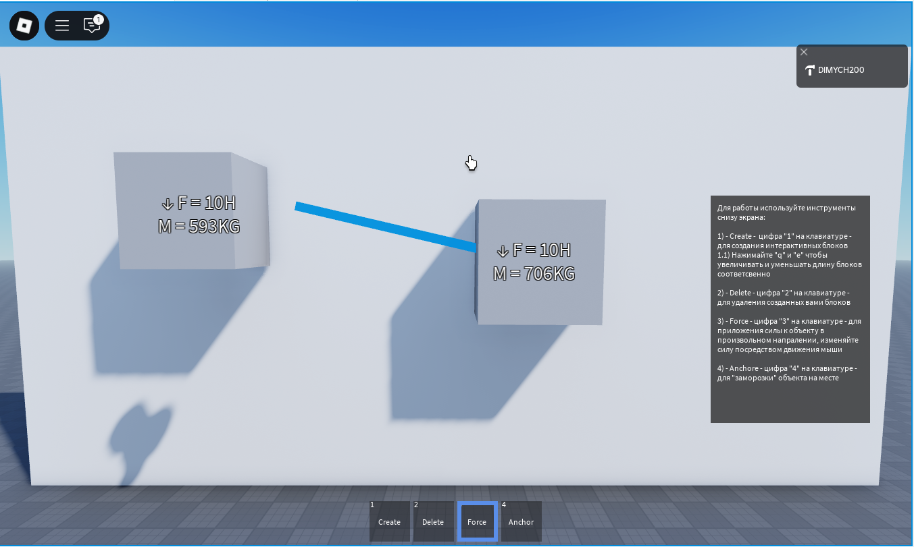
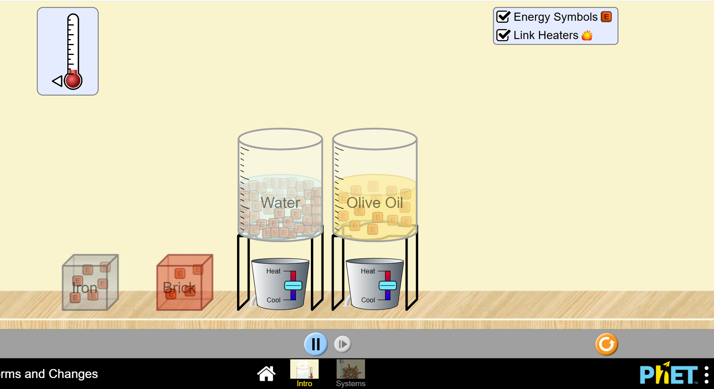
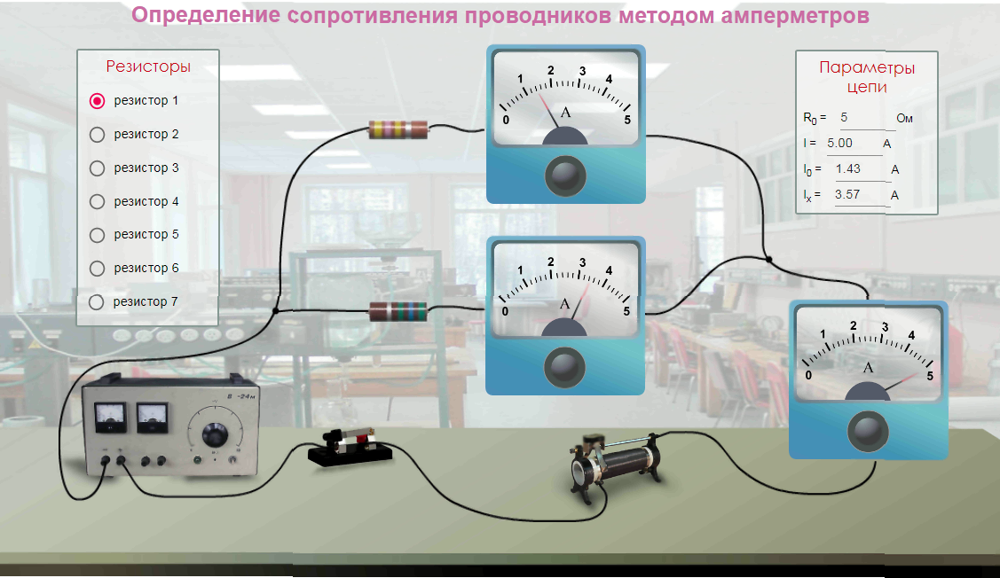
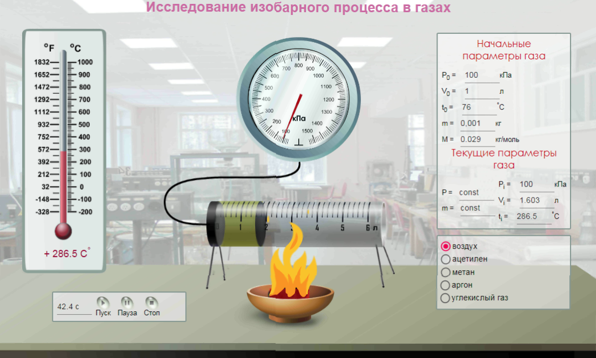
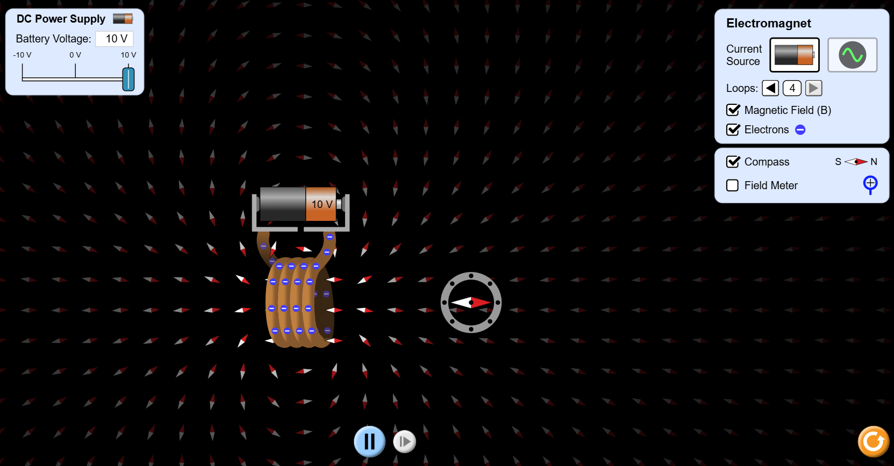
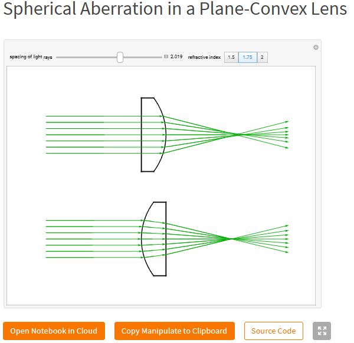
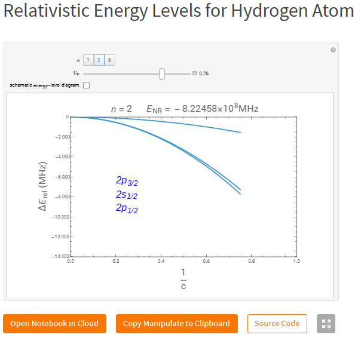
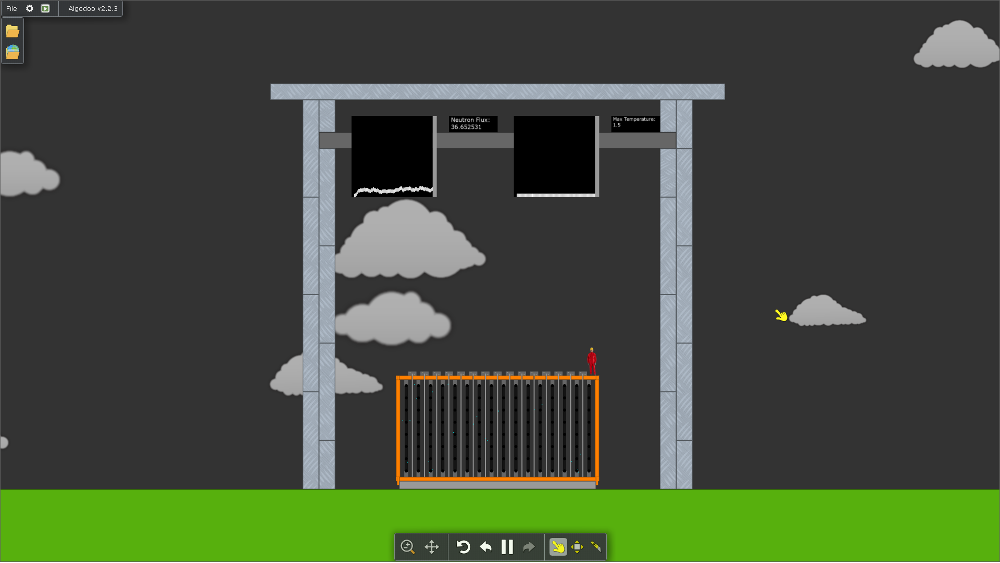
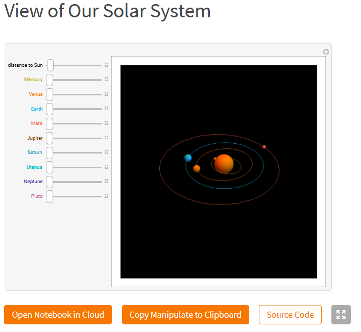

9 Класс
Механика
Изучение закона сохранения энергии. Моделирование движения тел под действием силы тяжести. Исследование законов Ньютона (например, движение по наклонной плоскости).
Для данных задач хорошо подходит мой продукт. Позволяет создавать свои объекты, с которыми в впоследствии можно взаимодействовать.
https://www.roblox.com/games/78142966541705/Virtual-lab-10-3-projectТепловые явления
Моделирование теплопередачи. Изучение уравнения состояния идеального газа. Исследование процессов испарения и конденсации.
Для данных задач хорошо подхрдит PHET симуляции.
Как пример: симуляция изменения энергии
https://phet.colorado.edu/en/simulations/diffusionГлавная страница сайта
https://phet.colorado.edu/Электричество
Сборка электрических цепей и изучение закона Ома. Исследование последовательного и параллельного соединения проводников. Моделирование работы электрических приборов (лампочки, резисторы).
Хорошим вариантом будет российски сайт Efizika с виртуальными лабораторными работами
Раздел электричества на сайте
https://efizika.ru/course/view.php?id=50Главная страница сайта
https://efizika.ru/course/view.php?id=50#section-1210 Класс
Молекулярная физика
Моделирование броуновского движения. Изучение распределения Максвелла для молекул газа. Исследование фазовых переходов (плавление, кристаллизация).
Как пример: изучение изобарного процесса в газах
https://efizika.ru/course/view.php?id=44#section-17Электродинамика
Изучение магнитного поля и его взаимодействия с токами. Моделирование работы электродвигателя. Исследование явления электромагнитной индукции.
Снова PHET симуляции, в которых наглядно показана например: работа электромагнитов, направление линий магнитного поля
Раздел симуляций, связанных с электродинамикой
https://phet.colorado.edu/en/simulations/filter?subjects=electricity-magnets-and-circuits&type=htmlОптика
Моделирование отражения и преломления света. Изучение работы линз и зеркал. Исследование интерференции и дифракции света.
Для данного раздела подойдут симуляции сайта WOLFRAM. Пример на картинке - принцип работы линз
раздел симуляций по оптике https://demonstrations.wolfram.com/topic/opticsГлавная страница сайта
https://demonstrations.wolfram.com/11 Класс
Квантовая физика
Моделирование фотоэффекта. Изучение энергетических уровней атома. Исследование свойств элементарных частиц.
Для данного раздела снова лучше всего подходит сайт WOLFRAM, имея наибольший набор симуляций по квантовой физике
Раздел квантовой механики на сайте
https://demonstrations.wolfram.com/topic/quantum-mechanicsЯдерная физика
Моделирование процессов радиоактивного распада. Изучение цепной реакции деления ядер. Исследование работы ядерного реактора.
Данная программа требует установки на ПК, ссылка ниже на пример работы ядерного реактора
http://www.algodoo.com/algobox/details.php?id=278707Главная страница сайта
https://www.algodoo.com/Астрономия
Моделирование движения планет и спутников. Изучение законов Кеплера. Исследование эволюции звёзд.
Для раздела астрономии лучше всех снова оказывается сайт WOLFRAM, так как имеет наибольшее количество симуляций по этой теме. Пример на картинке - симуляция солнечной системы.
Раздел солнечной системы на сайте
https://demonstrations.wolfram.com/topic/solar-system